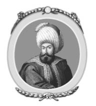
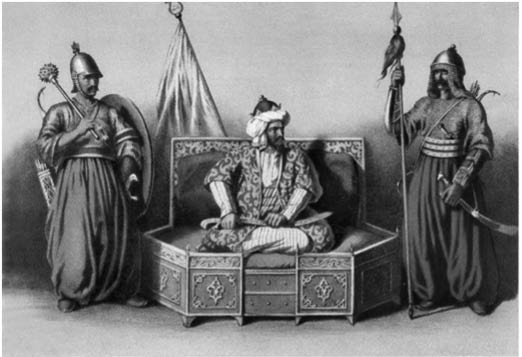

I : OSMAN
1288-1326

On üçüncü yüzyılın ortalarına doğru, küçük bir göçebe Türk topluluğu -ya da kabilesi-, Horasan’dan, Orta Asya’ya oradan da Küçük Asya’ya göç etti. Onlar Süleyman Şah’ın önderliğinde Horasan’dan kaçan, aileleri ile birlikte yaklaşık 200 ile 400 atlıdan oluşan daha büyük bir topluluğun parçalarıydı. Bulundukları yerden, Uzak Doğu’daki göçebe ve yağmacı bir topluluk olan Moğollar tarafından sürüldüler ve Küçük Asya’ya sığınabilmeyi umut ettiler. İlk yıllarını Ermenistan’a geçip Erzurum yakınlarında yerleşik halkı yağmalayarak geçirdiler. Moğol dalgası güçten düşünce, tekrar Horasan’a geri dönmeye karar verdiler. Fırat Nehri’ne vardıklarında, at sırtındaki Süleyman Şah nehri geçmek için sığ bir yer bulmaya çalışırken, akıntıya kapılarak boğuldu. Bu olay Şah’ın takipçileri tarafından kötü bir alâmet olarak sayıldı. Büyük bir toplulukla beraber Şah’ın iki oğlu ya Orta Asya’ya geri döndü ya da bulundukları yerde farklı bölgelere dağıldı.
Diğer iki oğlu Ertuğrul ve Dündar, dört yüz yirmi aile ile birlikte geldikleri rotayı izleyerek geri döndü. Erzurum yakınlarında belli bir zaman kaldıktan sonra Küçük Asya’ya, yani batıya doğru ilerlemeye başladılar. Aynı soydan gelen bir ırkın yaşadığı ülkeye vardılar. Orta Asya’nın aynı bölgesinden gelen başarılı Türk toplulukları, üç yüz yıllık farklı süreçlerden geçip kendilerini Küçük Asya’da buldular. Güç kullanarak belli bir bölgesini ele geçirdiler. Latincede İconium olarak bilinen Konya şehrini başkentleri olarak seçerek Selçuklu Türkleri adında bir imparatorluk kurdular. Ancak on üçüncü yüz yılın ortasına geldiğimizde, söz konusu imparatorluk çökmek üzereydi. Eninde sonunda Orta Asya’dan gelen, yeni oluşmuş bir grup istilacı tarafından saldırıya uğrayarak parçalandılar. Bir kısmı da baştaki ailelerin anlaşmazlıklarından kaynaklanan sivil çatışmayla parçalandı.
Ertuğrul’un kavmi ortaya çıktığında, Sultan Alaaddin Selçuklu şehrinden geri kalanları yönetmeye çalışıyordu. Geri kalanlar ise Karaman, Saruhan ve Menteşe Beyliklerinin hakimiyetine girdi. Bu üç beylik, Bursa, İznik, İzmit gibi şehirler ve onlara komşu olan Boğaz’ın etrafındaki yerler, Marmara Denizi ve Çanakkale Boğazı gibi bazı şehirler hariç, Küçük Asya’yı ele geçirdi. Söz konusu yerler daha önce Bizans İmparatorluğu’na ait bölgelerdi; İmparatorluk neredeyse bütün Anadolu’nun sahibiydi, ancak zamanla küçülüyorlardı. Ama iki eski Hıristiyan şehri hâlâ varlıklarını sürdürüyorlardı. Kuzeydoğuda Trabzon ve güneydoğuda Kilikya’da Küçük Ermenistan. Gerçi yine de bu bütünlük bazı bağımsız beylikler tarafından bölünmüştür. Ermeniler ve Yunanlılar hariç, Küçük Asya’da yaşayan insanlar birbirleriyle iyice kaynaşmışlardı. İstila eden Türklerle yerel halk birbirlerine karışmış, onlara Türkçeyi öğretmiş, yerli halktan da İslam’ı almışlardır.
Ertuğrul ve onun göçebe topluluğu, bu ülkeye girmeden önce çok inançlı birer Müslüman değildi, ancak var olan dile de yabancı sayılmazdı. Dinleri ne idiyse, çok sıkı bağlı değillerdi. Ülkede az bir süre kaldıktan sonra Müslümanlığa geçiş yaptılar. Sık sık acemilik çekseler de yeni kaderleri konusunda şevkli birer uzmana dönüştüler.
Ertuğrul’un sömürgesinin ve onun dört yüz yirmi atlısının Selçuklu’ya gelmesi ve nesilden nesile geçirilerek sık sık anlatılan hikâyesi şöyle devam eder: Bir tarafın daha baskın olduğu bir savaş zamanı ansızın geldiler. Savaşçılar hakkında hiçbir şey bilmiyorlardı. Ertuğrul yandaşlarına bir konuşma yaptı: “Dostlarım, doğrudan bir savaşın içine düştük. Kılıçlarımızı kuşandık. Kadınlar gibi kaçmak ve yolumuza devam etmek erkekçe değildir. İlk yardım eden biz olmalıyız. Kaybedene mi yardım edelim yoksa kazanana mı?” Ona şu cevabı verdiler: “Kaybedene yardım etmek çok zor olur. Zayıf ve sayı olarak azınlıktayız, muzaffer olan ise güçlü.” Ertuğrul cevap verdi: “Bu cesur olanın vereceği bir konuşma değildir. Bir erkek zayıf olana yardım etmelidir.” Böylelikle hepsi kazanan tarafa Moğollara saldırdı ve onların kaçmalarına sebep oldular.
Böylelikle Konya’nın Sultanı Alaaddin’e yardım ettiler ve zafer kazandırdılar. Hızır gibi yetişen yardım karşılığında, Alaaddin Sultan Ertuğrul’a bir bölge tahsis etti ve Selçuklu tımarına girdiler. Söğüt’ten başlayarak, Bursa’nın doksan altı kilometre güney doğusu ve batısındaki dağlara kadar verdiği bölgenin sınırlarını çizdi.
Ertuğrul ve atlıları, Alaaddin’in azalan hazinesine büyük katkı sağladı. Daha sonra küçük bir Bizans saldırısından galip ayrılmalarıyla Alaaddin, sadece ismen hakimiyeti olduğu kendi bölgesinden yerler verdi.
O zamandan sonra Ertuğrul 1288 yılında ölene kadar Türk topluluğunun başı olarak göç edip geldikleri topraklarda olaysız ve kırsal bir hayat sürdü. Horasan’dan ayrılmalarının üzerinden 50 yıl sonra öldü.
1258 yılında Söğüt’te doğan oğlu Osman, kavim tarafından babasının izinden gitmesi için seçildi. Çok geçmeden Osman babasından daha başarılı bir çizgiye sahip oldu. Osman daha on altı yaşına bastığında, Karaman’da saygın bir din adamı olan Şeyh Edebali’nin güzel kızına âşık oldu. Küçük bir söylentiye göre de Şeyh, Ertuğrul’u göz önüne alarak, Osman’ın kızı için uygun bir koca olmadığını söyledi. Ancak, Osman tarafından yapılan uzun ve sabırlı kur döneminden sonra ve Osman’ın soyuyla gelişecek olan büyük bir imparatorluğun geleceğine dair gördüğü rüya ile Edebali gençlerin evliliğine rıza gösterdi.
Osmanlı İmparatorluğu’nun kurucu Sultanları ile ilgili eş zamanlı bir tarih bilgisi bulunmamaktadır. Ancak 1453 yılında İstanbul’un fethi ile tarihçiler, ülkelerinin kuruluşunu yazmaya başladılar. Sonrakiler de yıllardır hiç değişmeden devam eden gelenek ve göreneklere tabi kalarak yazmak zorunda kaldılar. Hâlbuki Osman otuz sekiz yıllık hükümdarlığında, çok kısıtlı olan egemenliğini, Söğüt ve Eskişehir sınırlarından taşırarak; Boğaz’dan, Karadeniz’in kuzeyine doğru genişleterek yüz doksan üç kilometrelik uzaklığa, doksan beş kilometre sahaya yani yaklaşık on sekiz bin kilometre karelik bir alana taşımıştır. Büyük ihtimalle bu alanda Marmara ve Karadeniz kıyıları hariç, bir nüfus seyrekliği vardı ama buradaki popülâsyonu hesaplamanın bir anlamı yok. Bu alan sadece bir önemli şehri barındırmaktaydı, Bursa. 1326 yılında Osman’ın ölümünden kısa bir süre sonra şehir, kuşatmadan ve yıllarca Konstantinapol ile iletişimleri kesildikten sonra garnizonlar ve vatandaşlar tarafından teslim alınmıştır. Hatırı sayılır bir ekleme yapmak gerekirse, gelişmeye başlamış olan bu ülke, aslında büyüklüğü göz önüne alınırsa, çok da önemli bir ülke olarak nitelendirilemezdi. Sahip olduğu toprak hakimiyeti, Küçük Asya’daki Karaman, Saruhan ve diğerleri gibi daha büyük beylikler tarafından ziyadesiyle geçilmiştir.

Osman Bey ve Komutanları
Osman’ın kariyeri baştan itibaren, kendisinin güneyinde ve batısında bulunan Türk Müslüman ülkelerine karşı bir çaba harcamamıştır. Ancak kuzeyinde bulunan Bizans İmparatorluğu’na ait bölgeler, onlardan ayrılarak azat edilen şehirler ve reisleri Hıristiyan olanlar için sonsuz çaba sarf etmiştir. Bundan bir anlam çıkarmak istersek eğer, Osman’ın amacı kısmen dinîydi, yani İslam’ı yaymaktı. Bizans İmparatorluğu ordusuna karşı elde edilen zaferler bu doğrultudadır. İmparatora karşı kayda geçen bir tek savaş vardır bu arada. İzmit yakınlarındaki Bapheus’da (Koyunhisar), yandaşlarıyla beraber tahminen dört yüz atlı adamıyla iki bin kişilik Bizans bölüğünün önemsiz bir bölümüne karşı zafer kazanır. Bu olayı takip eden yılda (1302), Rum İmparator Michael Paleologus, Osman’ın zaferlerinden paniğe kapılarak, kendi yönetimindeki Slavlardan oluşan paralı askerler ile Küçük Asya’ya geçti. Ancak askerlere ödeme yapmak için yanında para getirmedi. Askerler para almadan savaşmazlardı. Askerler dağıldı ve Michael de başkente dönmek zorunda kaldı. Bu onun bölgede sahip olduğu toprakları korumak için son çabasıydı. Küçük Asya’nın farklı bölgelerinde de Türk emirleri tarafından hezimete uğradı. Böylelikle on dördüncü yüzyılın başlarında Rum İmparatorluğu Ege Denizi’ndeki bütün adalarda hakimiyetini kaybetti.
Osman’ın otuz sekiz yıllık uzun hükümdarlığı sırasında topraklarını genişletmesi sırasında, çok olmasa da onu epey yıprattı. Zaman zaman büyük hisarları, kaleleri ve etraflarındaki bölgeleri topraklarına eklemesi bu süreçte ona olumsuzluklar da getirdi. Bu bağlamda önceleri Selçuklu Hükümdarlığı’nın tımarı olarak hareket ediyordu; ancak daha sonra, söz konusu imparatorluğun sonu geldiğinde Osman bağımsızlığını ilan etti. Zamanından beri genişlettiği topraklar da kendisine kaldı.
Osman’ın genişlettiği topraklarda büyük bir bölümü Hıristiyan olan nüfus, dinlerini değiştirerek Müslüman olmuştur. Ancak bu durum asla zorlamayla olmamıştır. Tutuklular toplu katliama maruz kalmamıştır ya da köle olarak satılmadı. Konstantinapol’ün Rumları, onların koruyucuları tarafından terk edilişleri sebebiyle Müslümanlığı seçtiler. Osman tarafından kurulan ülkenin sadece Türklerden oluşmadığını Gibbons, çalışmalarında açıkça belli etmiştir. İslam sayesinde Türklerle kaynaşan, Slav ve Rumlardan oluşan bir birleşme yaşanmıştır.
Osman, önceleri belirgin bir şekilde diğer Türk ülkelerinden uzak durup, kendilerine Osmanlı adını verdi. ‘Türk’ ifadesi, kendileri ile karşılaştırıldığı zaman alt tabakaya ait insanlar için aşağılayıcı bir söz olarak kullanılırdı. Daha sonraki yıllarda, Küçük Asya’da bulunan diğer Türkî devletler imparatorlukla birleşince, ‘Türk’ ifadesi dışarıdan gelen yabancılar için, sonuç olarak kendileri tarafından, kendileri için söylenmeye başladı.
Bu sebeple Osman, yeni bir devletin itibarlı kuruluşunu, yenilik ve farklı insanlarla bütünleştirdi. Ancak “Sultan” unvanını almadı. Küçük Asya’daki diğer Türk devletlerinin başındakiler gibi o da “Bey” unvanıyla devam etti. Çok iyi bir kumandan değildi. Büyük bir çalışma yürütecek imkânı olmadı. Osman, yandaşları ve ona bağlı olanlara verdiği güven ile çok cesur bir asker ve sağduyulu bir liderdi. Genişleme politikasını büyük bir ısrarla sürdürdü. Son derece akıllı ve becerikli bir idareciydi, bu yolda ilerlerken kayınpederi ve aynı zamanda veziri Edebali’nin yardımlarını aldı. Irk ve din gözetmeden ona bağlı olanları eşit gördü ve onlara adil davrandı. Yaşamını basit ve gösterişsiz bir şekilde sürdürdü. Birden fazla eş aldığına ve iki oğlunun haricinde başka oğulları olduğuna dair bir kayıt yoktur. Mal biriktirmedi. Savaş ganimetlerinin bir bölümünü fakir ve öksüzler için ayırdıktan sonra askerleri arasında eşit bir şekilde dağıttı.
Osman’ın soyundan gelen diğer sultanlarda olduğu gibi, onun da karakterinde bir miktar acımasızlık vardı. Bir seferinde Osman, komşu devletlere yapılacak olan saldırı konusunda savaş konseyine ilerideki planlarını sundu. Babası Ertuğrul ile omuz omuza savaşan ve doksan yaşlarına gelmiş olan amcası Dündar, Osman’ın gelecekte yapmak istediği genişleme politikasına karşı geldi. Bu sorunu amcası ile tartışmak yerine Osman, tek vuruşta tatar yayı ile onu vurdu. Böylelikle tartışmaya bir son vererek konseydeki karşıt görüşleri de susturdu.
Von Hammer bu hikaye ile ilgili şu görüşlere yer verir:1
1 Von Hammer, i,p.28 (Fransızcadan tercüme edilmiştir)
“Roma’da kardeşlerin birbirini öldürmesi gibi, Osman’ın işlediği söz konusu cinayet Osmanlı’nın bölgedeki hâkimiyeti için terörden sakınmayacağını gösterdi. Sadece daha öncekiler de resmî tarihi kanıtlar vardı. Bir Türk tarihçisi olan İdris, çalışmalarının başında bu olayı göz ardı etmiştir ve bu kınanması gereken bir olaydır. ‘Dündar’ın Cinayeti’ ile ilgili sadece Osmanlı’nın refahı ve ihtişamını miras bıraktığını yazmıştır. Aileden birinin öldürülmesi, bir methiye yazarı gözüyle anlatılması, bu durumun kendi aralarında övülmeye değer bir hareket olduğunu gösteriyor. Bu durumda methiyelerle övülmemiş ve sessiz kalmış tarihi için ne düşünmeliyiz.”
Osman’ı günümüz şartları göz önüne alınarak yargılamamalıyız, içinde bulunduğu zaman açısından düşünmeliyiz. Söz konusu standartlarla birlikte Osman, insanî ve merhametli bir hükümdardır. Bu bakış açısı Osman soyundan gelip tahta çıkan herkes için yapılan dinî törenlerde dile getirilmiştir. Tahta çıkan sultan, Osmanlı’nın kurucusunun iki ucu keskin kılıcıyla kuşandıktan sonra, “Osman kadar iyi olsun,” sözleri dile getirilirdi.
Osman’ın yaşı ilerledikten sonra, savaş alanına gidemediği zamanlarda, ordunun komutasını oğlu Orhan alırdı. Osman’ın ölümünden hemen önce de Bursa teslim oldu. Eskiden beri ve şimdi de Bursa, Küçük Asya’nın en önemli şehirlerinden biridir. 38 yıllık hükümdarlığının sonunda Osman ölüm döşeğinde yatarken, oğlu Orhan babasına şefkat ile bir ağıt yakmıştır: “Ah, Osman! Sen imparatorların kaynağı, dünyanın hakimi, sen uluslara boyun eğdiren ve ulusların fatihi.” Ölmekte olan kral cevap verir:
“Yas tutmayın, ah benim oğullarım: sevinin! Bu, kötü dünyanın havasını solumuş genç, yaşlı bütün insan oğlu gibi benim kaderimdir. Ebediyete göçer iken, ihtişamlı, zengin ve mutlu yaşadım. Tahtımın vârisi sensin, bu yüzden gidişime hiç üzülmeyeceğim. Sana son talimatlarımı vereceğim, çok dikkatle dinle. Seni refahla taçlandırıyorum, sakın tiranlığa meyilli olma, zalimliğe de çok fazla bulaşma. Tam tersine, adaleti toprağı işler gibi işle, dolayısıyla toprağını güzelleştir. Benim bu dünyayı terk eden ruhumu, bir dizi güzel zaferlerle sevindir. Usulünce dünyanın hâkimi olduğunda, dinimizi yanı başından ayırma ve yay. Öğrendiklerini onurunla pekiştir ki, ilahî kanunlar kurulsun. Nerede olursa olsun sen her şeyi bilen adam ol ki, onur, ihtişam ve hoşgörü sana katılsın. Şan şeref, orduda değildir, gurur senin zenginliğindir. Kanun adamlarını yakınında tut, krallıklar desteğini adaletten alır, ayrıca amaca aykırı olan anlamsız koşullardan sakın. İlahî kanunlar senin yegane silahındır ve biz Tanrı’nın yolundan giderek başarıya ulaşırız. Yarar sağlamayacak kibirli teşebbüslere girme. Bizim tutkumuz kesinlikle dünyanın hakimi olmak değildir, hususî arzum inancımızı yaymaktır ki, bu görev senin tarafından başarılacaktır. Herkese eşit olarak merhametli ol. Yönetiminde umumî vazifeleri ifa etmelisin ve onlarla ilgilenmelisin. İyilikleriyle seçkin olmayan bir kral güven vermez. Daimi amacın sana bağlı olanların güvenliğini sağlamaktır, bu sayede sende Tanrı’nın koruması altına girersin ve sana yardım eder.”2
2 Cantemir, p. 20.
Büyük bir olasılıkla yazılanların çoğu yıllar sonra bir tarihçi tarafından türetilmiştir. Ancak belirli gelenekler baz alınırsa, ölmekte olan kralın hükümdarlığı boyunca ifa ettiği olaylar dahilinde bu yazı ortaya çıkabilir.
Osman, Bursa’nın fethedildiğine dair güzel haberleri aldıktan kısa bir süre sonra öldü. Son arzusu ise Bursa’ya gömülmekti. O, soylu bir ırktan geliyordu, onun başlattığı fetihlerin devamını getirecek olan dokuz neslin atasıydı. Fetihler, Osman’ın imparatorluğu kurmasından başlayarak 278 yıl yani on altıncı yüzyılın ortalarına, kendi soyunun en önemli padişahının Kanuni Sultan Süleyman’ın zirveye çıkmasına kadar devam etti. Onun soyundan gelen on ayrı muhteşem padişahtan sonra sultanlar yorulmaya başladı. Ondan sonra, şimdiki zamana gelene kadar istisnalar dışında soy dejenere olmaya başladı.